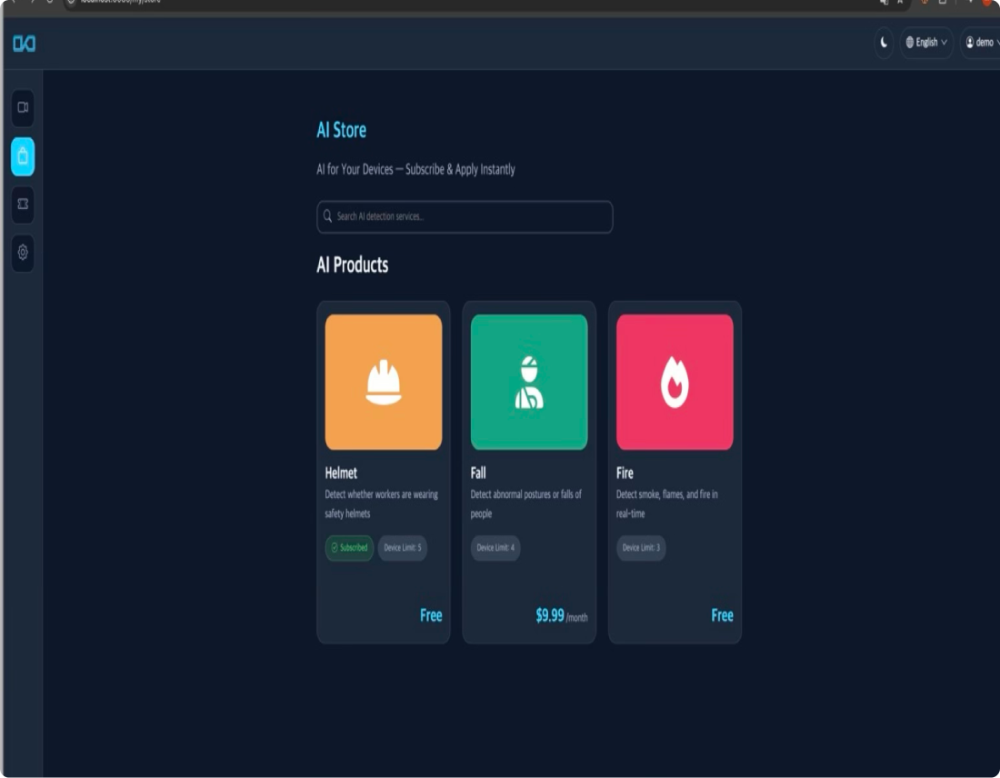

현장에서 입증된 기술력, 기관이 신뢰하는 선택
SmartOkO는 정부, 공공, 민간 공간에 실제로 도입되어 검증된 AI 성능과 실효성 있는 결과를 만들어가고 있습니다.
SmartOkO x Samsung Office
스마트오피스 실증 기반 AI 감지 프로젝트
도입 배경
- 실내 복도, 계단, 휴게 구역 등에서의 비가시 안전사고 선제 대응 목적
- 기존 CCTV 인프라 그대로 유지하면서 AI 기능 검증
- 폐쇄망 환경에서의 V-ECU 기반 엣지 처리 가능성 확인
설치 범위
- CCTV + RTSP 연동으로 영상 실시간 수집
- 내부 네트워크 기반의 로컬 엣지 처리 방식 적용 (서버 불필요)
- 실내 공용 공간 중심으로 낙상·쓰러짐 등 감지 대상 구역 선정

적용 기술
- 낙상 감지 / 움직임 정지 인식
- 실내 흡연 감지 (화장실 등 포함)
- 공간 활용도 분석을 위한 히트맵 생성 기능 테스트
- 경고 연동 기능 확인: 시각/청각 알림 가능 여부